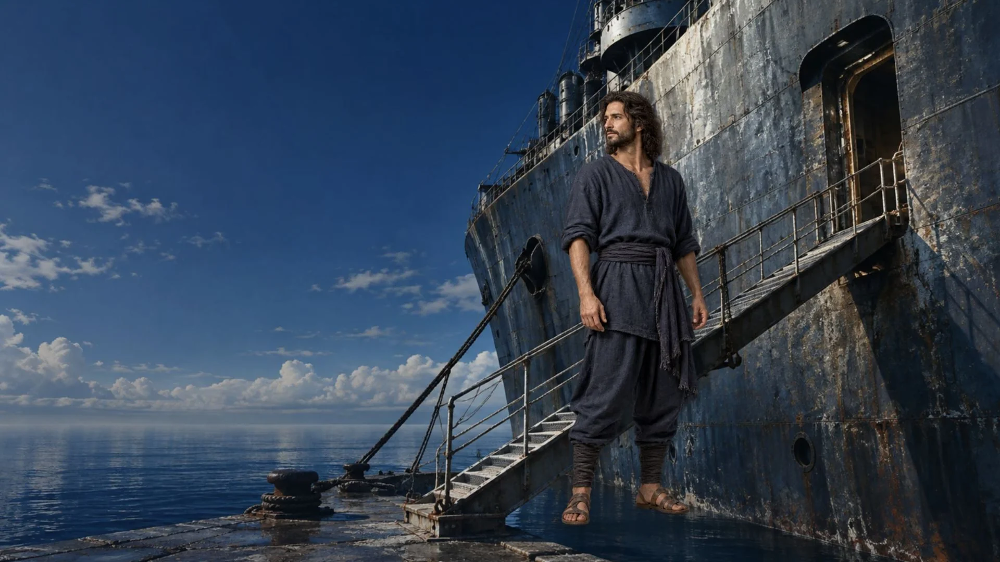
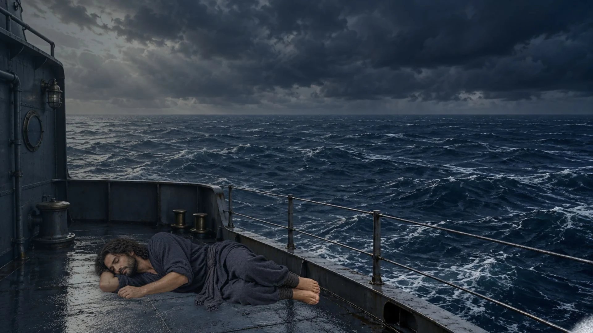
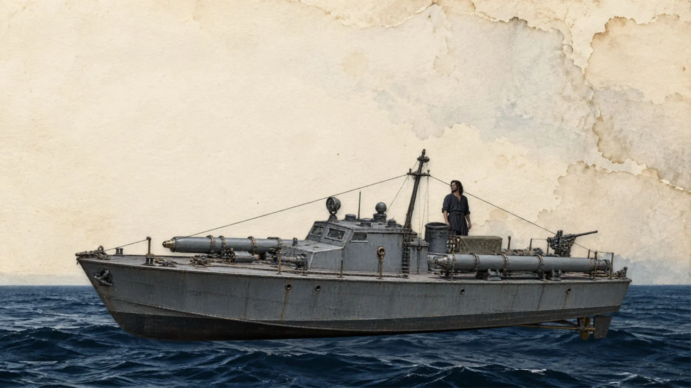
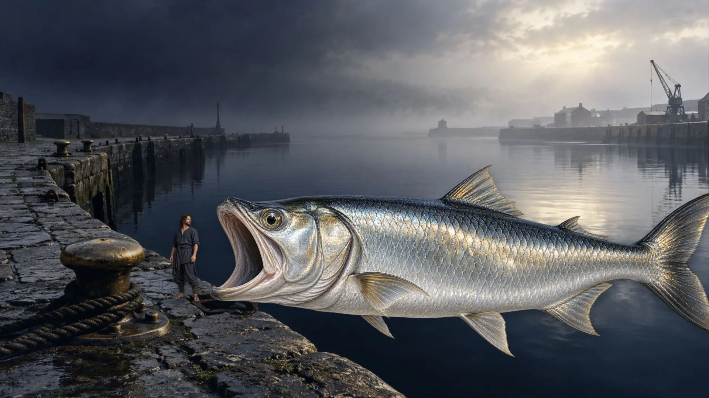
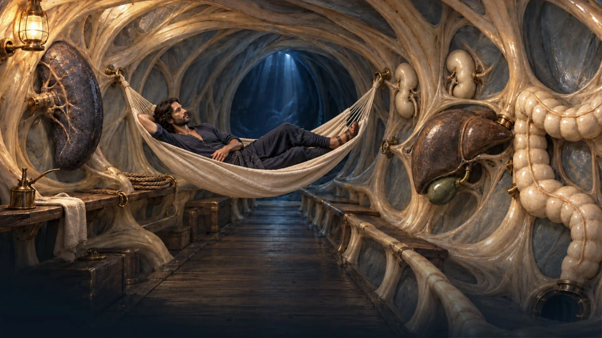
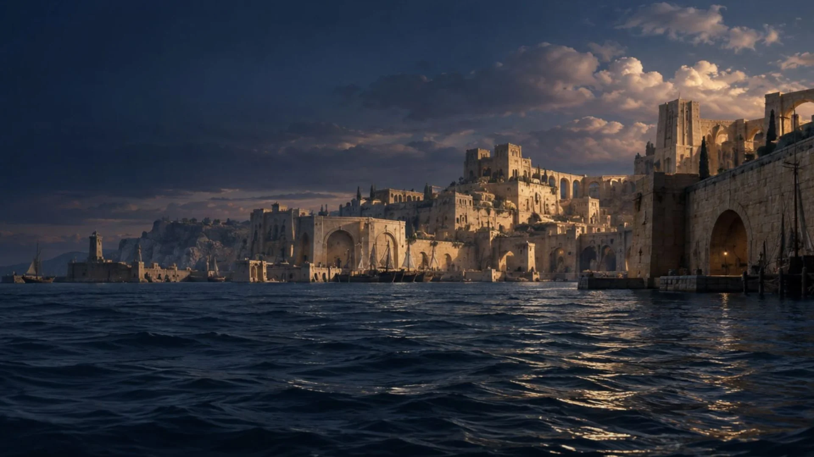
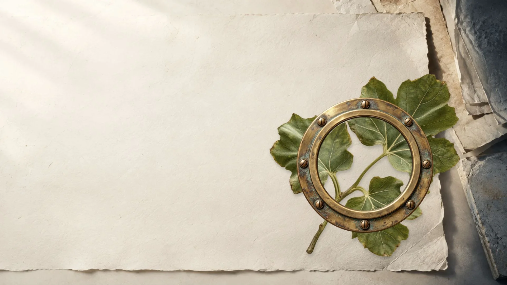

הצוללן העברי הראשון
Jonah becomes a sailor aboard the fictional destroyer INS Tarshish.

A wave carries the sleeping Jonah overboard.

He requests a transfer and volunteers for submarine service.

A living silver fish becomes Jonah’s submarine.

Hammock between spleen and kidneys; liver oil, gallbladder cleaning, intestinal torpedo control.

The throat becomes a periscope. Years of service bring a commendation.

וַאֲנִי לֹא אָחוּס עַל־נִינְוֵה
Jonah 4:11, excerpt; working English translation.
Technion research gives the song a career ending. Jonah 4:11 leaves a question.
Words: Dan Almagor. Music: Albert Piamenta. Performed by Arik Lavie. Original generated artwork. The destroyer and harbor are fictional; the plant is a stylized kikayon.
Lyrics and credits
Listen to the recording
Jonah 4 in Hebrew